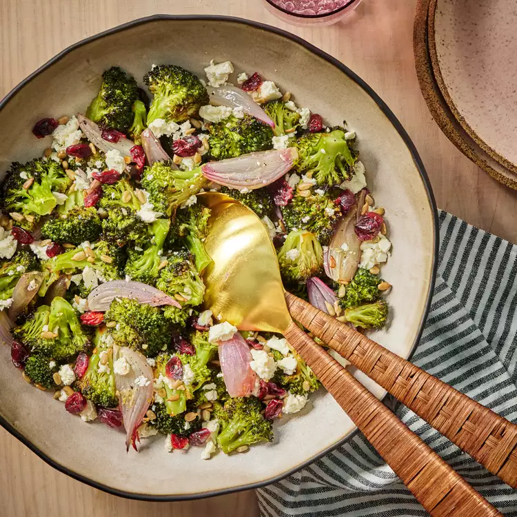

Broccoli Salad
The vibrant colors and flavors in this crowd-pleasing roasted broccoli salad make it a must-have.
Preparation time
- Total: Approximately 40 minutes
- Preparation: 15 minutes
Ingredients
- 1 pound fresh broccoli florets, cut into bite-size pieces (about 6½ cups)
- 4 medium shallots, peeled and quartered
- 4 tablespoons extra-virgin olive oil
- 1 teaspoon grated lemon zest
- 1½ tablespoons lemon juice
- 1 clove garlic, minced
- ¼ teaspoon salt,ground pepper
- ½ teaspoon dry mustard
- 2 tablespoons unsalted roasted sunflower seeds, unsweetened dried cranberrie
- ½ cup crumbled feta cheese
Instructions
- step1: Preheat oven to 425°F with rack in top third position. Place broccoli and shallots on a large rimmed baking sheet. Drizzle with 1 tablespoon oil, tossing until evenly coated; arrange in an even layer. Roast until the broccoli is bright green and browned in spots, 18 to 20 minutes. Let cool slightly, about 5 minutes.
- step2: whisk 1 teaspoon lemon zest, 1½ tablespoons lemon juice, minced garlic, ½ teaspoon mustard and ¼ teaspoon each salt and pepper together in a small bowl. Whisking continuously, drizzle in the remaining 3 tablespoons oil until the mixture is emulsified, 2 to 3 minutes.
- step3: Transfer the broccoli mixture to a large bowl. Pour in the vinaigrette; toss well to coat. Sprinkle with ½ cup feta and 2 tablespoons each sunflower seeds and cranberries.
- step4(enjoy): Season with corriander and enjoy.
Nutrition
The table below shows nutritional values per serving without the additional fillings.
| Calories | 240cal |
|---|---|
| Carbs | 14g |
| Total Sugar | 5g |
| fiber | 4g |
| Protein | 7g |
| Fat | 19g |